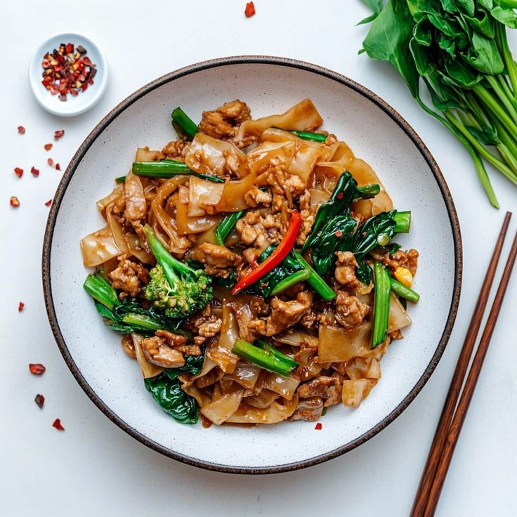

Receita de Pad Thai

Ingredientes (4 porções)
- 300 g de peito de frango, cortados em pedaços pequenos ou carne de porco
- Um pouco menos da metade de um pacote de macarrão de arroz
- 1 cebolinha picada (4 ramos)
- 1 pimentão vermelho fatiado tiras finas
- 2 porções de broto de feijão
- 1 punhado de amendoim (pode ser torrado ou seco)
- Shoyu
- 1 cebola grande cortada em pedaços pequenos
- 4 dentes de alho picados
- 1 colher de sopa de gengibre descascado e ralado
- 2 ovos ligeiramente batidos
Molho Thai
- 1/3 xícara de caldo de galinha
- 1 colher de sopa de suco de limão
- 1 colher de sopa de shoyu
- 3 colheres de sopa de vinagre de arroz (ou branco)
- 4 colheres de sopa de açúcar mascavo
- 1 colher de chá de pimenta preta
Modo de preparo: 30 minutos
- Acrescente duas colheres de molho shoyu no porco ou frango
- Deixe reservado por uns 10 minutos.
- Leve uma panela grande de água para ferver e cozinhe o macarrão.
- Despeje em uma peneira e lave com água fria para interromper o processo de cozimento.
- Aqueça uma panela ou frigideira grande em fogo médio e regue com azeite para fritar a cebola.
- Não deixe queimar.
- Adicione o frango e frite por mais uns 5 minutos ou até ficar cozido.
- Adicione o alho, o pimentão, o gengibre e broto de feijão.
- Refogue mais 1 ou 2 minutos ou até que os vegetais estejam macios.
- Empurre os legumes para o lado e adicione os ovos. Mexa rapidamente para embaralhar.
- Vá adicionando aos poucos o molho Thai, sempre mexendo o macarrão.
- Se estiver muito seco, pode adicionar um pouco de shoyu, mas não muito.
- Decore com os amendoins e cebolinha picada.
- Molho: Misture todos ingredientes do molho e agite bem para dissolver o açúcar.
- Deixe reservado.
Curiosidades sobre o Pad Thai
- O Pad Thai não é milenar – foi popularizado nos anos 1930–40 pelo ditador Plaek Phibunsongkhram (Phibun) como parte de um plano nacionalista para:
Reduzir a influência chinesa,
Promover ingredientes locais,
Unificar a identidade tailandesa.
- Nas regiões budistas do Norte, existe o Pad Thai Jay (sem ovos, carne ou alho).